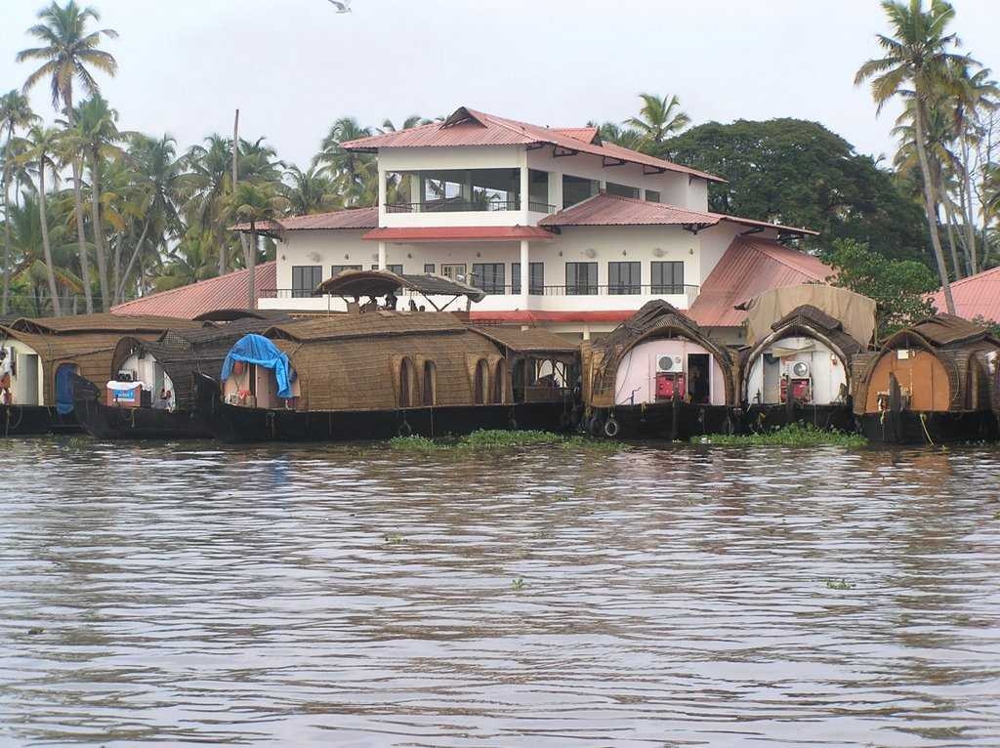
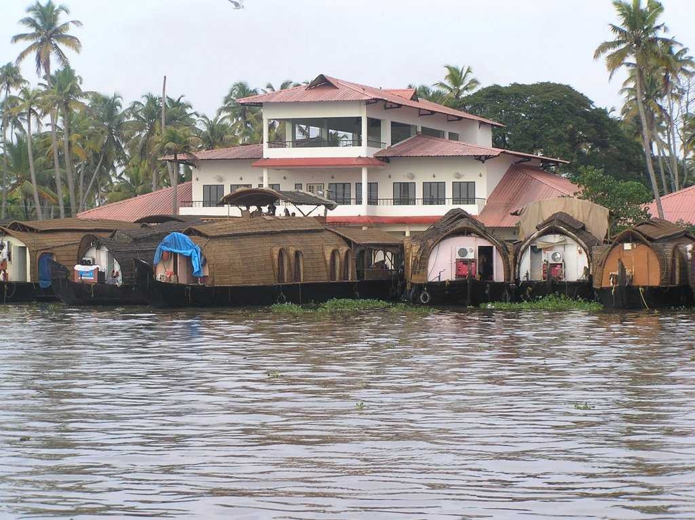
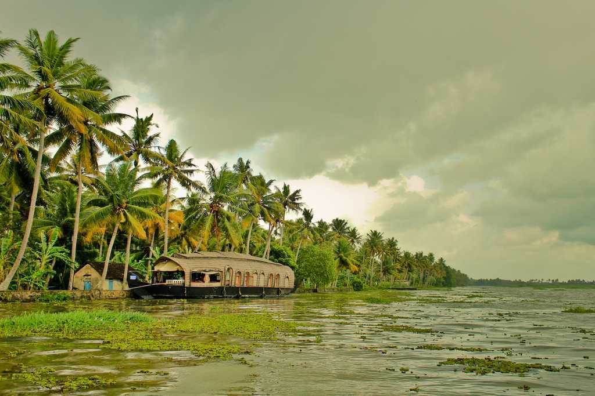
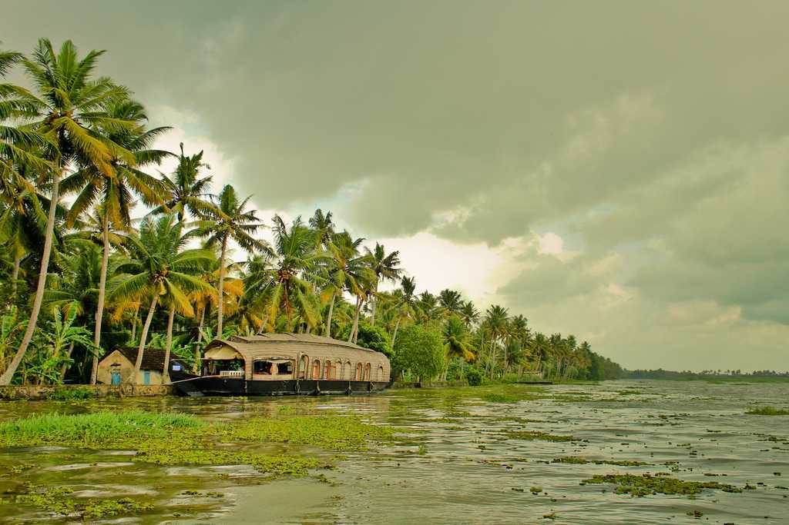
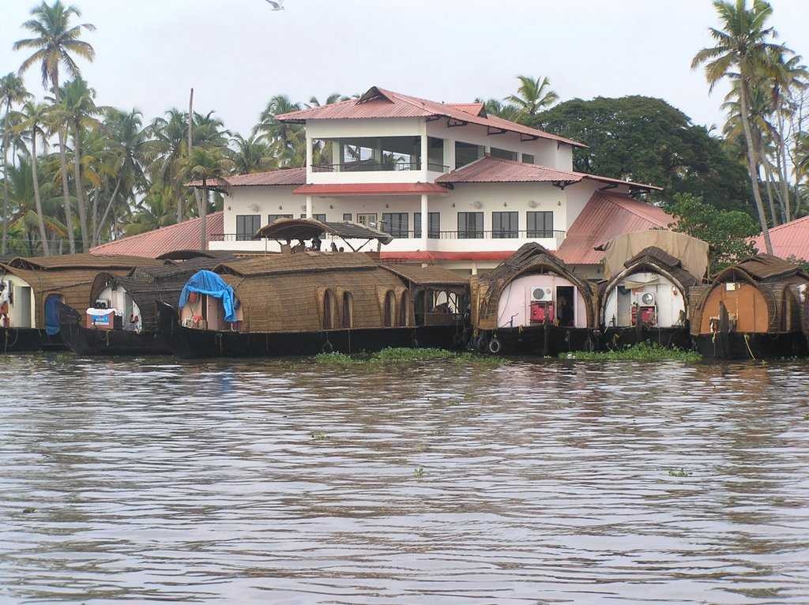
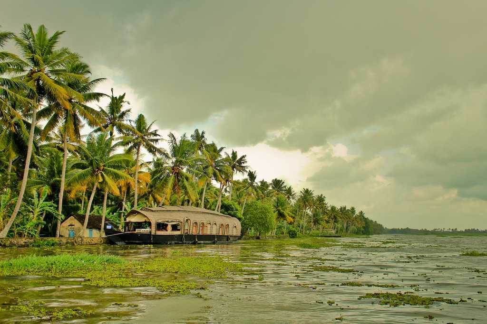
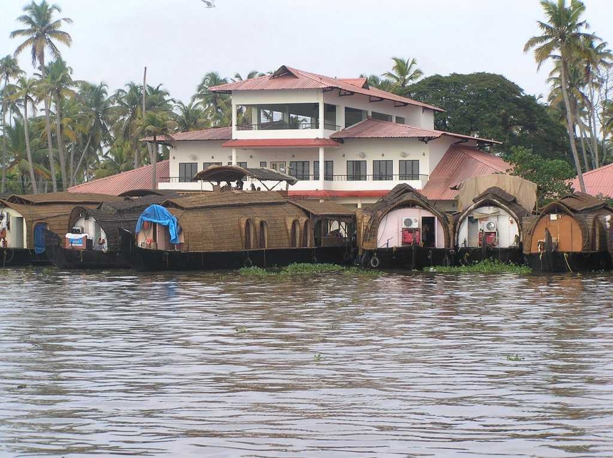
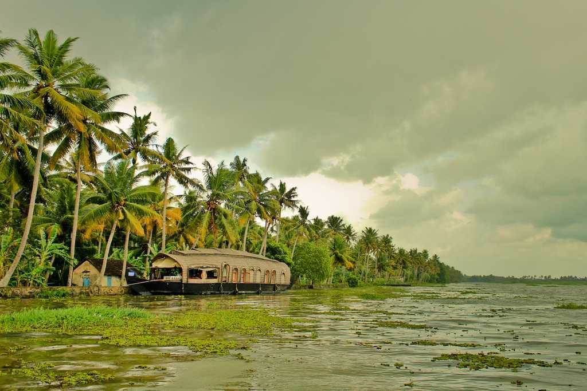

Kerala
 

 

 



Famously known as 'God's Own Country', Kerala is a state located on the Malabar coast of Southern India. Home to a vast network of brackish lagoons called backwaters, ayurvedic massages, wildlife sanctuaries, sprawling tea gardens, hill-stations, palm tree-lined beaches and colourful dance forms, Kerala has everything on offer to take your pick from!
Munnar is a popular hill-station of Kerala perched at an altitude of 1600 metres in the Western Ghats. Famous for its tea estates, various shades of green, blankets of mist and craggy peaks, Munnar is aptly known as the 'Kashmir of South India'. Munnar serves as the commercial centre for some of the world's largest tea estates. Besides, Munnar has many protected areas which are home to endemic and highly endangered species like the Nilgiri Thar and the Neelakurinji. Situated on the banks of three rivers- Madupetti, Nallathanni and Periavaru, Munnar is also blessed with natural view-points apart from the tea-plantations. Munnar is divided into Old Munnar, where the tourist information office is, and Munnar, where the bus station and most guest houses are located. The Eravikulam National Park, Salim Ali Bird Sanctuary and tea plantations are its major attractions.
Officially called Alappuzha, Alleppey is a city in the South Indian state of Kerala. Bordering the Laccadive Sea, it is known for its wide network of interlinking, palm-fringed canals called backwaters and rejuvenating Ayurvedic resorts. Allepey is also popular for its Houseboat cruises that pass through the serene backwaters, where you can catch glimpses of green paddy fields, choir making activities, beautiful avifauna and witness the life of locals in Kerala. Towards the shore lies the Alleppey beach in the Arabian Sea, a beautiful example of the gems you’d find along the Malabar Coast. The appeal of this beach is only amplified by the history attached to it, and a walk down the 137-year old pier is a must. Be sure to catch a traditional snake boat race in the months of August and September and try out some toddy (palm wine) at a local toddy shop for adding a touch of authenticity to your travel experience in Allepey.
Situated on the south-west coast of India, Kochi or Cochin is a bustling commercial port city with a trading history that dates back to at least 600 years. Called as the Queen of the Arabian Sea, the city is the financial, commercial and industrial capital of Kerala. The city is marked by influences of Arabs, Dutch, Phoenicians, Portuguese, Chinese and the British city as well as that of the Indian rule of the Chera Dynasty followed by rule of the Feudal Lords. A gaggle of islands interconnected by ferries, this cosmopolitan town has upmarket stores, art galleries and some of the finest heritage accommodations. In a true vintage-meets-future fashion, pubs, restaurants, shopping hubs and futuristic stores crowd Ernakulum, Jew Town and Fort Kochi while palaces, beaches, temples and heritage sites marking their presence too. Kochi is also an important place to see Kathakali and Kalarippayattu performances and annual Biennale Festival.
Located at a distance of 16km from Kottayam in Kerala and located on the banks of Vembanad Lake, Kerala's largest lake, Kumarakom is a cluster of many small man-made islands reclaimed from the lake. Part of the Kuttanad region, Kumarakom along with Alleppey, has beautiful backwater areas and they collectively form the most important tourist centres of Kerala. Known for paddy fields, fishing, a network of backwaters, delicious local cuisine, traditional Kettuvalloms (rice barges) houseboats and luxury and budget resorts. The Kumarakom bird sanctuary here, which is spread across 14 acres, is a favourite haunt of migratory birds and an ornithologist's paradise. Take a two-hour canoeing trip during the sunrise or sunset to experience the beauty of this place. Kumarkom is the first destination to implement responsible tourism.
Varkala is a coastal town in the southern part of Kerala known for the unique 15m high 'Northern Cliff' adjacent to the Arabian Sea. It is popular for its hippie culture, shacks on the cliff serving great seafood and playing global music and the samadhi of Kerala's saint Sree Narayana Guru. Varkala is also known for Jardana Swami Temple, also known as Dakshin Kashi. Varkala has some of the best pristine beaches, hills, lakes, forts, lighthouses, natural fisheries and springs - all of this together makes this town a little paradise. You will also find a lot of shops with signboards in Hebrew selling Yoga mats, oxidised silver jewellery and harem pants made of cotton. Ayurvedic spas, affordable resorts, hostels, clean beaches make it a must-visit city of Kerala.